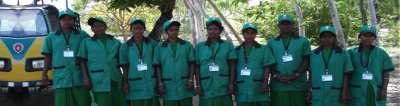
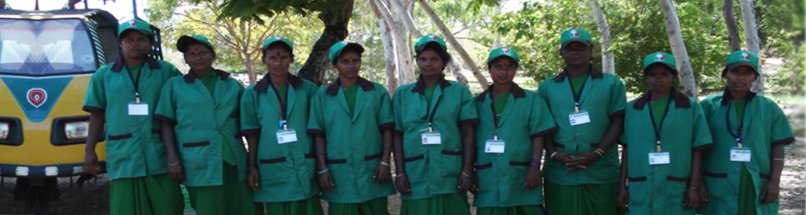

Management
Management
Founder and managing trustee of Exnora Green Pammal, Ms. Mangalam Balasubramanian holds master's degrees in nutrition, sociology and Hindi, and a doctorate in nutrition. From 1971 to 1984 she worked as chief nutritionist for USAID in India, coordinating their maternal and child health (MCH) nationwide programme. In 1984, she joined Indian Social Institute, New Delhi, as director of their women's development programme. From 1985 to 2003, she worked for DANIDA as a senior programme officer for primary health care projects, and as chief advisor to the Tamil Nadu Women in Agriculture Programme which trained 6,00,000 women marginal farmers. From 2003 to 2005, she served as a resource person for the Tamil Nadu Empowerment and Poverty Reduction Project, and as an agricultural consultant for the Tamil Nadu Corporation for the Development of Women, responsible for designing and implementing agricultural training for 25,000 women farmers. She has published several books, including Nutrition Education Programme: An Analytical Review
Under Ms. Balasubramanian's pioneering leadership, Exnora Green Pammal has become a widely-recognized role model for solid waste management, and an award-winning example of public private partnership. With support from PepsiCo, Exnora Green Pammal has replicated its waste management practices in over a dozen Indian localities in partnership with local administrations and residents, improving public health, protecting the environment, and demonstrating that the government's municipal solid waste management regulations are workable, relevant and effective.
For her accomplishments, Ms. Balasubramanian has earned several awards, including Servant of the Poor from the Confederation of NGOs of Rural India (CNRI), and the Dr. Gurusamy Mudalaiyar Environmental Protection Award (first place) from the Tamil Nadu State Government. Exnora Green Pammal has been awarded the Golden Peacock Award for eco-innovation, the Exnora International Excellence Award, and the Social and Corporate Governance Innovation Award from the Bombay Stock Exchange, the NASSCOM Foundation and the Times Foundation. In addition to receiving frequent media attention, Exnora Green Pammal's work has been documented and promoted by Unicef, and commended by UN Habitat as a promising practice for improving the living environment.
Members of Executive Board:
Ms. Mangalam Balasubramanian, President/Chairman (Development Professional)
Ms. Jayalakhmi Viswanathan, Vice President (Social activist)
Ms. Saraswathi Sooryanarayanan, Treasurer
Ms. Mahalakshmi Janardhanan, Secretary (Community development Social Welfare)
Ms. Malathy Balakrishnan, Principal, Sankara Vidyalaya Matriculation Higher Secondary School, Pammal
Mr. S. Venkatachalam, Financial Controller, (Former City Bank Vice President)
Dr. S. Shankar, Health professional, U.K.
Mr. Balasubramanian, Communication and organizational expert
Mr. V. V. Ramanathan, Marketing Advisor
Members of Executive Board:
Ms. Jayalakhmi Visvanathan
Ms. Saraswathi Sooryanarayanan
Ms. Mahalakshmi Janardhanan
Ms. Malathi Balakrishnan
Mr. S. Venkatachalam

 
